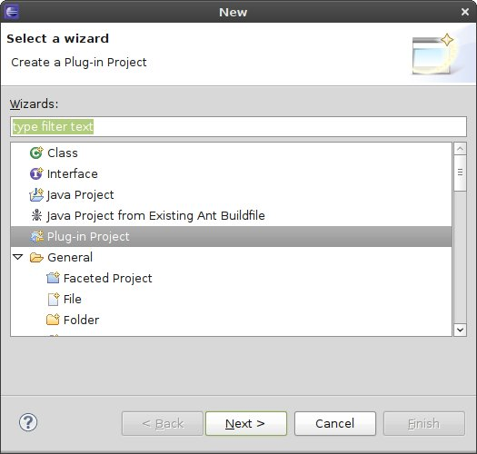
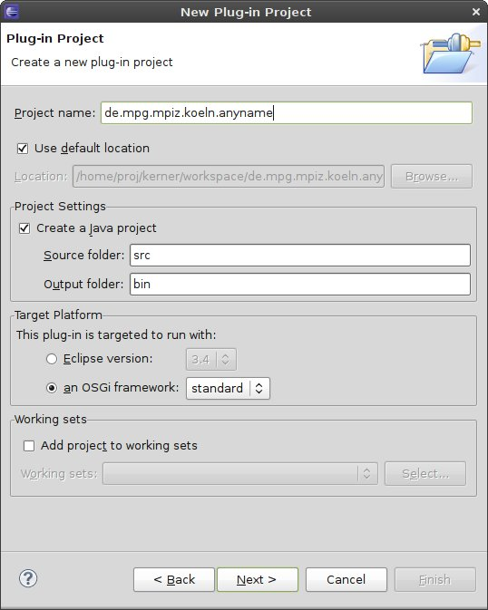
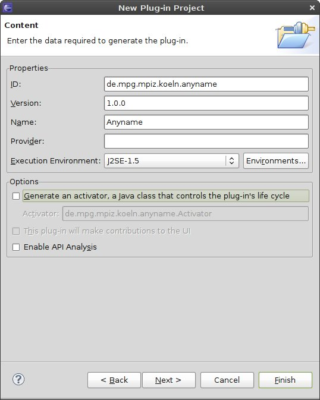
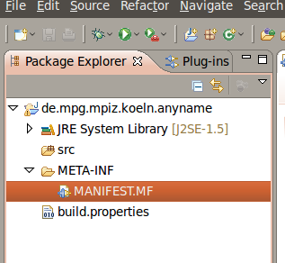

In Eclipse, choose File → Project... → Plug-in-Project.


Choose any name.
For terms of compatibility, the runtime environment for the new Plug-in shall be any OSGi implementation. Therefore, we choose standard for the OSGi framework.
Click Next.
The settings of the next page provide some meta information for the Plug-In, which also contain the runtime specification. Make sure you choose J2SE-1.5
The generation of an Activator class is not necessary, because we will provide a custom activator later on.

Click Finish.
In order to have access to the framework classes, we must at last declare some import statements:
Double click the MANIFEST.MF file to open the Plug-In's Manifest editor.

Click on Dependencies → Imported Packages → Add...
Select
de.kerner.commons
de.kerner.commons.logging
de.kerner.commons.osgi.utils
de.mpg.mpiz.koeln.anna.abstractstep
de.mpg.mpiz.koeln.anna.core
de.mpg.mpiz.koeln.anna.data
de.mpg.mpiz.koeln.anna.server
de.mpg.mpiz.koeln.anna.server.data
de.mpg.mpiz.koeln.anna.step
org.osgi.framework
org.slf4j
org.slf4j.helpers
org.slf4j.impl
org.slf4j.spi
org.apache.log4j*